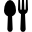
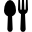

Fonts utilitzades
- Informació sobre els plats tradicionals extreta i adaptada de Viquipèdia – Cuina catalana
- Recepta de pa amb tomàquet: vídeo de YouTube per Kilometre0.cat
- Imatge del pa amb tomàquet: Viquipèdia
- Recepta de canelons i Escudella: vídeo de YouTube per Cuinateca
- Imatge escudella: Cookpad
- Imatge canelons: Racó Català
- Imatge Celler de Can Roca: Web Celler Can Roca
- Imatge Semproniana: Gastronòmicament
- Imatge Disfrutar: Hospitality Snapshots
-
Les icones
 menu.png,
menu.png,
 menu.png,
menu.png,
 home.png,

cutlery.png,
home.png,

cutlery.png,
 restaurant.png,
link.png i
ai.png han estat descarregades de
Flaticon i s'utilitzen segons la seva llicència.
restaurant.png,
link.png i
ai.png han estat descarregades de
Flaticon i s'utilitzen segons la seva llicència.
Generació de contingut amb IA
Dues imatges: la de la portada i la de favico